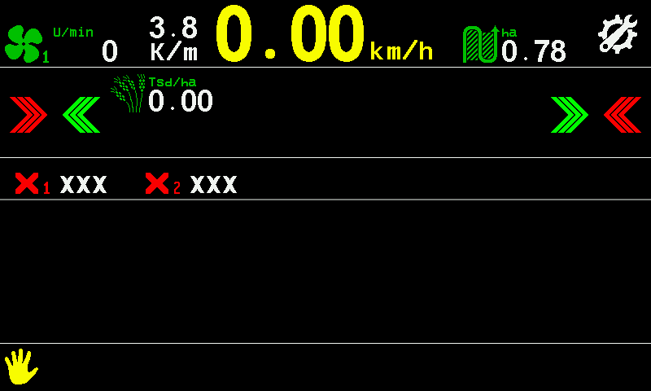
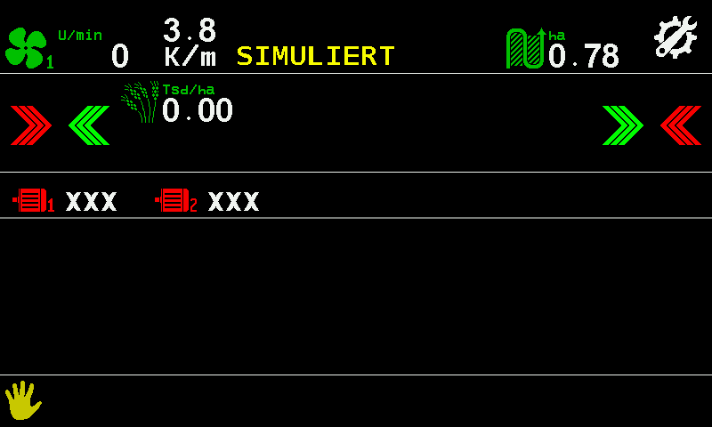

Der zweite Startbildschirm
Der Startbildschirm für eine Maschine ohne Kornsensoren — was auf ihm steht, wie Sie ihn öffnen und schließen und was seine Pfeilspitzen und Kacheln bewirken.
Dieser Bildschirm wurde für ein System ohne Kornsensoren geschaffen: eine Maschine, bei der die Aussaatmenge von den Elektromotoren der Dosierer gehalten wird und das Panel die wichtigsten Arbeitsaggregate überwacht. An einer solchen Maschine wäre der gewöhnliche Startbildschirm fast leer.
Öffnen Sie ihn vom Startbildschirm aus mit einem Wischen nach rechts. Schließen Sie ihn mit „HOME“ oder einem Wischen nach links. Er gehört nicht zum Kreis der Arbeitsbildschirme, und das Panel schaltet nicht von selbst auf ihn um — auch an einer Maschine ohne Kornsensoren startet es auf dem gewöhnlichen Startbildschirm.

- Gebläse. Das Gebläse und seine Drehzahl in U/min.
- Kornablage. In Körnern je Meter.
- Fahrgeschwindigkeit. In km/h; gelb, solange sie simuliert wird. Geschwindigkeit
- Fläche. Bearbeitete Hektar auf dem aktiven Feld.
- Einstellungssymbol. Eine Berührung öffnet das Hauptmenü, genau wie „MENU“.
- Rote Pfeilspitzen. Eine Berührung nimmt den äußersten Motor auf dieser Seite aus der Überwachung.
- Grüne Pfeilspitzen. Eine Berührung nimmt den nächsten Motor zu dieser Seite hin wieder in die Überwachung.
- Sollmenge. In Tausend Körnern je Hektar. Berühren und halten Sie sie und wischen Sie dann nach oben oder unten, um sie zu ändern.
- Motor 1. Seine Nummer und sein Wert; das Symbol wechselt mit dem Zustandszeichen — hier STOP, der Motor läuft nicht.
- Motor 2. Ein rotes × und XXX — keine Verbindung; der Motor wird nicht angesteuert.
- Handsperre. Die gelbe Hand: Die Ausbringung ist von Hand gesperrt. Berühren und halten Sie sie oder halten Sie „HOME“ gedrückt, um zu sperren oder freizugeben.
Jedes Motorsymbol wechselt etwa einmal pro Sekunde zwischen dem Bild des Motors und dem Zeichen seines Zustands. In der anderen Blinkphase sieht derselbe Bildschirm so aus — die Motoren sind als Motorsymbole gezeichnet, und das Wort „SIMULIERT“ hat die Geschwindigkeitsanzeige ersetzt, weil die Geschwindigkeit simuliert wird:

Was Sie hier tun können
| Aufgabe | So geht es |
|---|---|
| Das Hauptmenü öffnen | „MENU“ oder das Einstellungssymbol berühren |
| Die Aussaatmenge ändern | Die Menge berühren und halten, dann nach oben oder unten wischen. Sie bleibt innerhalb der zulässigen Grenzen. |
| Motoren aus der Überwachung nehmen oder wieder hineinnehmen | Die roten oder grünen Pfeilspitzen an den Enden des Mengenstreifens berühren. Mit „Ja“ bestätigen, wenn das Panel fragt. |
| Die Einstellungen eines Motors öffnen | Den Motor berühren und halten |
| Die Produktausbringung sperren oder freigeben | „HOME“ gedrückt halten oder die Hand berühren und halten. Ein kurzer Signalton bestätigt. |
| Zum Startbildschirm zurückkehren | „HOME“ oder nach links wischen |
Was die Zustände der Motoren bedeuten: Bildschirm Motoren.
Ihre Maschine tut etwas, das diese Seite nicht beantwortet? Schreiben Sie an support@agriwelt.com — es antwortet ein Ingenieur.